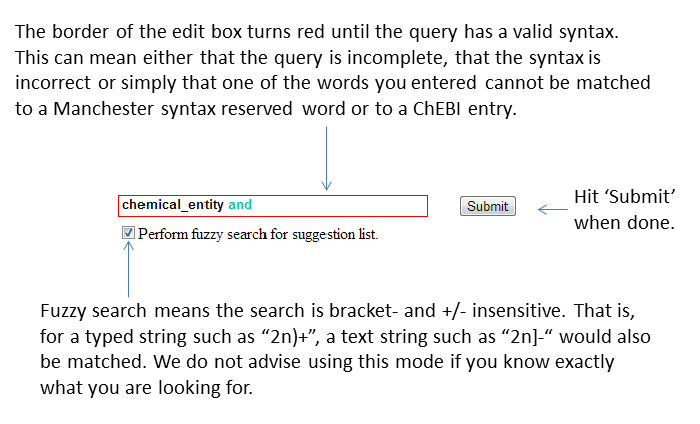
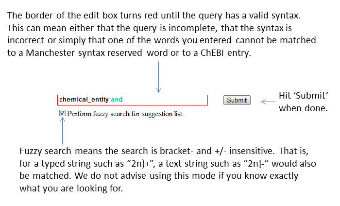

ChEBI OntoQuery TutorialThe ChEBI OntoQuery is an online OWL query tool meant to ease your experience of retrieving data from ChEBI while enhancing the power of the existing advanced tool search. You should however keep in mind that this is a strict ontology search and thus any information outside our ontology will not be searchable using this tool (e.g. the structures). This is a quick tutorial to give you an overview of our tool's functions and help you write the queries, if you are not familiar with the OWL Manchester syntax. Please also keep in mind that we only present here the features of the tool which are of interest in the context of ChEBI's expressivity. ChEBI OntoQuery Tour  
Query SyntaxFor writing the queries we use the Manchester syntax which an intuitive and compact syntax for class expressions, designed for OWL ontologies. The OWL expressivity is higher than ChEBI's and therefore we will only show here the small subset of expressions that one can build using Manchester syntax, that are relevant to ChEBI. For more information about the Machester syntax please visit the corresponding W3 page or CO-ODE page. Quick tips:
ExamplesWe feel the best way to teach something is by example, so let us take some. We recommend that you build the queries yourself instead of just copy-pasting our solutions, so that you can get a feeling of our OntoQuery tool. Let's suppose we are interested in one of the following: 1. all di- and trisaccharide derivatives which are methyl glycosides .This query is quite intuitive to build and as you might notice when trying it yourself, the autosuggest helps you a lot building it. An possible solution is:
( disaccharide_derivative or trisaccharide_derivative ) and methyl_glycoside An equivalent formulation would be the one below, where the parenthesis are optional because and has precedence over or, as multiplication takes precedence over addition in mathematics. ( disaccharide_derivative and methyl_glycoside ) or ( trisaccharide_derivative and methyl_glycoside ) 2. all secondary metabolites which are also coumarins or phenolsA possible solution is: ( phenols or coumarins ) and has_role some secondary_metabolite You might be tempted to write directly "and secondary_metabolite" instead of "and has_role some secondary_metabolite", but there will be no results for this query. This happens because secondary_metabolite is a role in ChEBI, whereas phenols and coumarins are chemical_entities. Roles and chemical entities are disjoint in ChEBI, which means no entity can be at the same time both a role and a chemical entity. The existence of roles is something you must keep in mind and the best way to check is to search for the entity of interest in ChEBI and check whether it is a role or chemical_entity. 3. all pyrimidines or phenols which have antibacterial propertiesA possible solution would be:( pyrimidines or phenols ) and has_role some antibacterial_agent Although you might not know the exact name of a particular class in ChEBI (in this case, antibacterial_agent), simply typing part of the name (e.g. 'antib') into the edit box will cause the correct name to appear in the suggestions list.4. all insecticides or acaricides which can also be used as fungicidesA possible solution is: ( chemical_entity and has_role some ( insecticide or acaricide ) ) and has_role some fungicide These were just a few examples to show you the process of building a query. They were all pretty easy queries but the complexity of the query you might build is arbitrary and providing you group your sub-queries correctly there is nothing to stop you from successfully building and running queries several lines in length. Try It YourselfWe hope that you now feel prepared to try building some queries on your own. We have a further three exercises.1. Find all lactams that are antibioticslactam and has_role some antibiotic 2. Find all organic sodium salts that are steroids and are conjugate acid of organosulfate oxoanion.( organic_sodium_salt and has_parent_hydride some steroid ) and has_part some organosulfate_oxoanion 3. Find all antibacterial and antifungal which can also be used as antibiotics.( chemical_entity and has_role some ( antibacterial_agent or antifungal_agent ) ) and has_role some antibiotic If you have any queries, comments or suggestions about the ChEBI OntoQuery tool and tutorial, please contact us at chebi-help[at]ebi.ac.uk. |